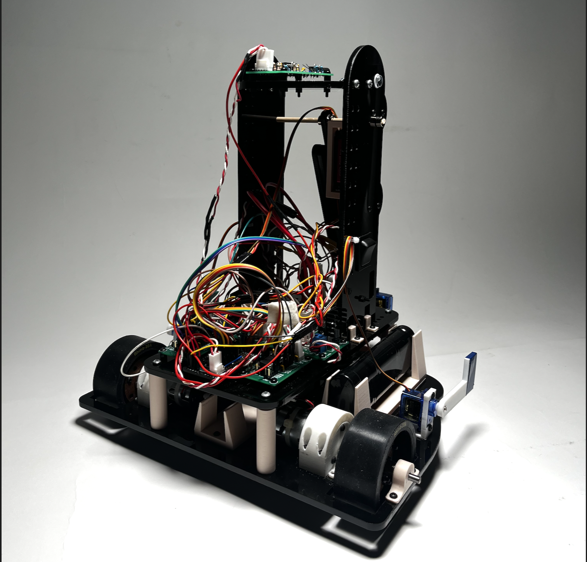
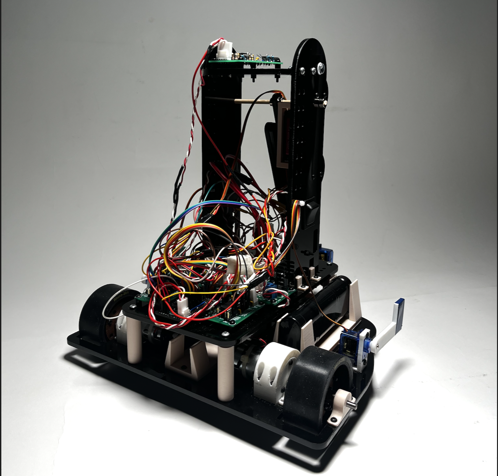

Autonomous Crate Transport Robot
Frank’s design prioritizes simplicity: a single-degree-of-freedom 4-bar lift, a magnet-and-pusher grabber, and automatic line-follower calibration minimize complexity. By focusing solely on scoring on his own STACKs, he consistently accrued points and claimed second place in the final tournament.
What I Learned and Did
Rather than diving into all the details here, check out Frank (like Frank from MIB) in this website instead.
Skills I Used
- C programming
- PIC32 microcontroller
- SPI communication
- event-driven architecture
- analog input processing
- motor control
 

Space-themed Diversion from Listlessness (SpaDL)
Designed and built a self-contained, interactive space-themed game that dazzled users with engaging sensor-based interactions, creative actuator-driven feedback, and a blend of tactile and visual elements. Integrated real-time inputs, custom hardware, and precise timing to deliver an immersive experience.

What I Learned and Did
Gained hands-on experience in microcontroller programming, event-driven software, and electromechanical design. Rather than diving into all the details here, check out the project website instead. It’s a journey that’s truly out of this world...
Skills I Used
- C programming
- PIC32 microcontroller
- event-driven architecture
- analog input processing
- electromechanical systems
- schematic design (KiCad)


Autonomous Task Learning and Assistant System (A.T.L.A.S.)
The A.T.L.A.S. is an autonomous robotic arm designed to pick up objects on command, learn tasks, and function as a personal assistant. Created using generative design, it features tight tolerances for assembly, integration of 6 servo motors, and housing for a Raspberry Pi.
What I Learned and am Doing
Through this project, I’ve learned to optimize designs using generative tools, integrate servo motors with a Raspberry Pi, and use computer vision for object detection and positioning. I’ve also gained experience applying inverse kinematics for precise movement, developing software for automation, and ensuring everything fits together seamlessly. Additionally, I’ve improved my problem-solving skills by tackling challenges across mechanical, electrical, and software aspects of the project.
Skills I Used
- generative design and CAD modeling
- servo motor integration and control
- embedded programming with Raspberry Pi 5
- computer vision and object detection
- inverse kinematics for robotic motion
Icy Wave
I designed and built an aluminum ice press that transforms blocks of ice into spheres. The press features precision-machined 3D geometry, tight tolerances, and a refined finish, blending functionality with aesthetic craftsmanship.

What I Learned and Did
I used Fusion 360’s Form workspace to create organic 3D geometry and the Manufacture workspace to set up precise and efficient CNC toolpaths. I also focused on making the design CNC-friendly by adding flat surfaces along the organic exterior, ensuring manufacturability, and minimizing setup complexity. Through CNC machining, I developed skills in achieving tight tolerances and assembling components with carefully designed mechanical interfaces for smooth operation.
Skills I Used
- Fusion 360 Form workspace for 3D modeling
- Fusion 360 Manufacture workspace for CNC toolpaths
- designed for CNC manufacturability
- machined aluminum parts with tight tolerances

MechaBrain
Designed a mobile robotic system, inspired by TurtleBot-like designs, to complete a series of tasks. The system utilized ultrasonic sensors and a feedback control system for navigation and was programmed using an Arduino Uno.

What I Learned
I learned how to program a robot to execute pre-defined tasks, integrate ultrasonic sensors, and use a proportional controller for simple navigation. I also gained experience debugging and refining a mobile robotic system. Catch all the details on this website
Skills I Used
- Arduino programming
- sensor integration
- control systems
- mobile robot design and assembly
- debugging and troubleshooting

Candy Dispenser
Designed and built a mechanical desktop candy dispenser using laser-cut and 3D-printed components. The dispenser incorporated rotary motion, stock mechanical hardware, and precise engineering to reliably dispense one candy per input
What I Learned
Gained hands-on experience in designing and fabricating mechanical systems, integrating rotary motion and springs, and using laser-cut and 3D-printed components. Improved skills in prototyping, troubleshooting, and ensuring functional reliability in a compact design.
Skills I Used
- mechanical design
- laser cutting
- 3D printing
- SolidWorks (assembly + joints + hardware + custom designs)

Bottle Opener(B.O.)-Cycle
Designed and machined a Tron-inspired bottle opener based on the hyperbole “opening bottles at light speed.” The design creatively integrated the bottle-opening mechanism beneath the seat of a cycle, mimicking the aesthetics of the iconic light-cycle from Tron.
What I Learned
With this project I learned about developing a 3D design, adapting it to CNC machining constraints, and executing advanced manufacturing processes like clamp-ring workholding and part flipping. It showcased a unique blend of creativity, technical precision, and innovative problem-solving within the constraints of material, cost, and functionality.
Skills I Used
- Fusion 360 Design + Manufacturing
- CNC Manufacturing (HAAS VF2)
- Lateral Thinking


Stackable Shoe Rack
Designed a generative, single-piece shoe storage solution optimized for 3D printing on an Ender 3. The storage unit was engineered to be stackable, combining efficiency, functionality, and aesthetic design in a single print.

What I Learned
Gained experience in generative design and optimizing complex geometries for single-piece 3D printing. Improved skills in designing for functionality and manufacturability while working within the constraints of the Ender 3 printer.
Skills I Used
- generative design
- Fusion 360
- 3D printing
- design for manufacturability


Vibrotactile Navigation System
Developed a wearable system for human motion guidance using an Arduino Nano, two vibration motors, a motor driver, NPN transistors, and an IMU. The system featured two settings: regulating arm swing timing and limiting arm swing angle. A custom case housed the electronics and battery, with slip-resistant tape ensuring secure attachment to the arm.
What I Learned
Gained experience in designing and implementing wearable systems, integrating sensors, and programming for motion guidance. Improved skills in soldering and creating custom enclosures while addressing user comfort and usability with features like slip-resistant materials and secure housing for electronics.
Skills I Used
- Arduino programming
- vibration motor control
- soldering
- prototyping

Remembering Home
CDesigned and crafted a custom desk lamp from sand-casted aluminum. The process involved sanding a 3D print for casting, finishing with a m anual lathe and mill, and powder coating the final piece white. The lamp featured laser-cut acrylic pieces scaled to represent the heights of five family members, complemented by aluminum sheet initials for each.
What I Learned
Gained hands-on experience with sand casting, including preparing 3D prints for molds, finishing aluminum castings with a lathe and mill, and powder coating. Improved skills in precise fabrication and integrating custom design elements like laser-cut acrylic and aluminum components into a functional piece.
Skills I Used
- sand casting
- 3D printing
- manual mill, lathe
- powder coating
- laser cutting
- sheet metalworking


Banana Launcher
Designed and built a banana launcher inspired by a slingshot-style mechanism. The machine featured custom components engineered to handle loads exceeding 100 N, used an electric motor with a gearbox, and performed near 10 J of mechanical work. Experimental testing was conducted to quantitatively evaluate its performance.

What I Learned
Learned to design and fabricate custom components to withstand significant loads, ensuring mass efficiency and mechanical reliability. Gained experience integrating an electric motor with a gearbox and performing quantitative performance evaluations. Improved skills in prototyping, testing, and troubleshooting mechanical systems to meet precise functional requirements.
Skills I Used
- 3D printing
- Fusion 360 Simulation
- mass-efficient design
- free-body diagram analysis
- motor and gearbox integration

Moded Ender 3
Upgraded and customized an Ender 3 3D printer for enhanced functionality and user experience. Modifications included a silent motherboard, direct drive extruder, quieter PSU with a larger fan and custom 3D-printed cover, a PEI bed, and custom 3D-printed enhancements to improve usability and convenience.

What I Learned
Learned to modify and optimize 3D printers to enhance performance and reduce noise by upgrading components such as the silent motherboard, quieter PSU, and larger fan. Gained experience in integrating custom 3D-printed parts to improve usability, functionality, and hardware assembly.
Skills I Used
- identifying pain points
- noise reduction
- working with small tools, tight spaces
- UltiMaker Cura


Monte Carlo Tree Search Connect 4
Developed and implemented Monte Carlo Tree Search (MCTS) to explore decision-making in Connect 4. Simulated games against random opponents, human players, and AI agents, analyzing performance under varying computational constraints. Results highlighted MCTS’s adaptability and effectiveness in strategic gameplay.

What I Learned
Learned to code and implement Monte Carlo Tree Search (MCTS) for strategic decision-making. Improved skills in evaluating AI performance under varying constraints and interpreting results from simulations against diverse opponents. Check out this paper for more details.
Skills I Used
- Python programming for AI
- algorithm implementation
- Monte Carlo Tree Search
- game state simulations
- performance analysis
Autonomous Navigating TurtleBot
Developed and tested an autonomy stack for a TurtleBot using A* path planning, Python programming, and ROS. Integrated heading controllers, a custom A* planner, and a detector node to enable Frontier Exploration and stop sign detection. Built and deployed the system in a ROS workspace, including custom node development, debugging, and simulation testing. Successfully demonstrated autonomous navigation and exploration capabilities on the TurtleBot platform.
What I Learned
Learned to develop and integrate an autonomy stack using A* path planning, ROS, and Python. Gained experience in implementing Frontier Exploration for mapping unknown environments. Improved skills in testing and deploying autonomous navigation solutions in both simulation and real-world scenarios.
Skills I Used
- Python programming
- ROS2 framework
- RViZ visualization
- node development and debugging
- autonomous navigation
Automated Wire Rope Lubrication
Designed and developed an automated lubrication system for Renewell Energy’s Gravity Well, which repurposes inactive oil wells into clean energy storage systems. The system reduces operational costs by extending the lifespan of a key component—the wire rope—through effective lubrication. It integrates a water pump, air compressor, atomizing nozzle, and environmentally friendly lubricant to deliver precise, efficient coverage at 60 ft/min. The project involved determining optimal pressure settings, performing static tests, and creating a scalable, autonomous solution to minimize human intervention and power consumption.
What I Learned
I developed skills in conducting detailed testing, performing Failure Modes and Effects Analysis (FMEA) to identify and mitigate design risks, and delivering effective design reviews. Additionally, I gained experience translating User Requirements (UR) into actionable Engineering Requirements (ER), ensuring the system met performance, environmental, and energy constraints. Collaborating with multidisciplinary teams and maintaining thorough documentation helped me address real-world challenges in sustainable and cost-effective engineering solutions.
Skills I Used
- FMEA
- design reviews
- component integration
- testing and analysis
- documentation
Aeromutable (Summer 1)
Designed a custom bracket for a power unit to ensure 100% reliable system power during tests. Created a fully store-bought air intake system for cost-effectiveness and easy replacement. Developed a real-time weather data program to enable immediate system adjustments based on current conditions. Maintained meticulous document control for 15+ critical materials, including instruction manuals, design reviews, cost analyses, prototypes, and CAD drawings.
What I Learned
Working at a startup helped me improve my ability to deliver effective design reviews, use SolidWorks for modeling, and write Python programs like a real-time weather data application. I also refined my skills in creating CAD drawings, working with single-board computers (SBCs), using power tools for fabrication, and maintaining thorough documentation for critical materials. This experience enhanced my ability to balance design, functionality, and execution in a fast-paced environment.
Skills I Used
- SolidWorks modeling
- Python programming
- CAD drawing creation
- single-board computer (SBC) integration
- power tool operation
- design reviews
- documentation management
- Git version control
Aeromutable (Summer 2)
Sourced and procured testing devices and equipment from various suppliers to enhance protocols and enable accurate fuel consumption measurements during on-road evaluations. Used power tools extensively for equipment setup and testing. Performed comprehensive functionality tests to ensure reliability and effectiveness. Maintained detailed documentation for testing processes, supplier interactions, and experiment outcomes. Conducted weather data analysis and comparative assessments to support system optimization.
What I Learned
Improved skills in sourcing and procuring specialized equipment by communicating with suppliers and evaluating options for testing protocols. Gained hands-on experience using power tools for setup and functionality testing. Strengthened documentation practices by maintaining detailed records of testing processes, supplier interactions, and experimental outcomes. Enhanced analytical abilities through weather data analysis
Skills I Used
- equipment sourcing and procurement
- power tool operation
- functionality testing
- 3D printing
- SolidWorks modeling
- data analysis
- documentation management